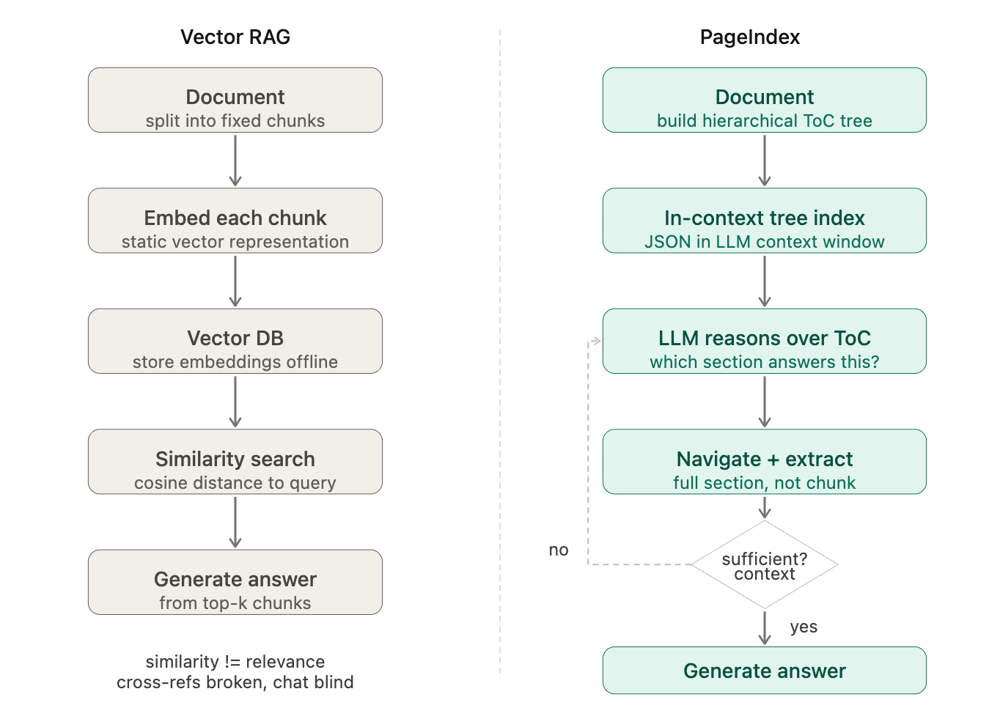
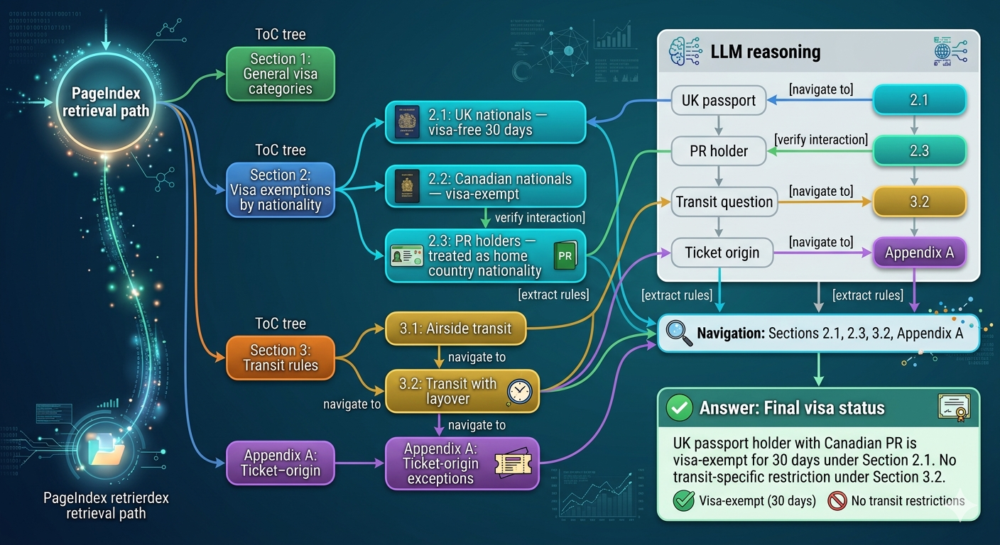
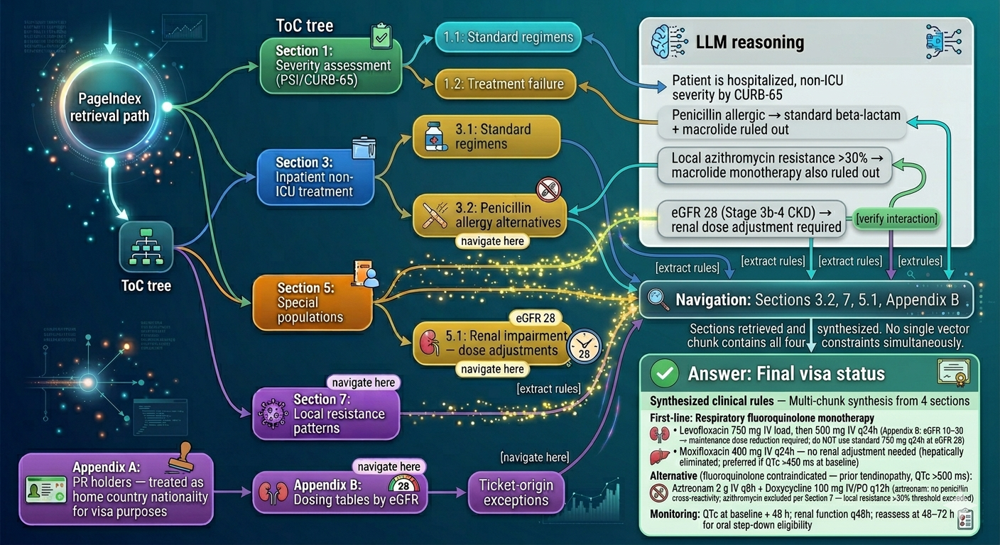

This is Part 8 of the RAG Enterprise Series. This post stands alone — it targets engineers working with structured professional documents (financial filings, clinical guidelines, legal agreements, regulatory disclosures). For context on how this fits into the L1–L4 framework, Part 1 is the reference.
The L1–L4 levels assume retrieval works by similarity — embed the query, embed document chunks, find nearest vectors. That assumption is correct for corpus-level search across thousands of documents. It is the wrong mechanism for navigating a 200-page SEC filing, a clinical treatment guideline, or a mortgage agreement. This post is about what to use instead.
6.4 Retrieval Mechanism Selection: Vector Search vs. Reasoning-Based Navigation
Sections 6.1-6.3 addressed the memory, prompt, and generation layers of the stack. This section addresses a more fundamental choice: how the retrieval itself works. Every RAG level described so far assumes similarity-based retrieval — embed the query, embed chunks, find nearest vectors. But there is an emerging paradigm that replaces this mechanism entirely for document-centric workloads: reasoning-based retrieval.
The clearest implementation of this paradigm is PageIndex (VectifyAI) — a vectorless RAG approach that uses LLM reasoning over a hierarchical document index instead of vector similarity search.
The Mechanism
Step 1 — Index construction (offline, once per document):
The LLM reads the full document and generates a hierarchical JSON "Table of Contents" tree. Each node represents a logical section (chapter, clause, appendix, table) and stores a node_id, title, page range, and a summary. The tree preserves the document's natural structure — not artificial fixed-length chunks.
{
"node_id": "0006",
"title": "Financial Stability",
"start_index": 21,
"end_index": 22,
"summary": "The Federal Reserve's role in monitoring systemic risk...",
"sub_nodes": [
{
"node_id": "0007",
"title": "Monitoring Financial Vulnerabilities",
"start_index": 22,
"end_index": 28,
"summary": "Assessment of leverage, liquidity, and interconnectedness..."
}
]
}
Step 2 — Query-time retrieval (runtime, per query): The full ToC tree is loaded into the LLM's context window as an "in-context index." The LLM reads the tree, reasons about which section is likely to contain the answer, navigates to that section, extracts the relevant content, and checks whether it has enough to answer. If not, it loops — picking the next most relevant section.
This is reasoning-driven, not similarity-driven. The LLM is deciding where to look, not just what looks similar to the query.
What Reasoning-Based Retrieval Solves That Vector RAG Cannot
| Vector RAG failure mode | Reasoning-based resolution |
|---|---|
| Query-knowledge space mismatch (query intent ≠ document phrasing) | LLM infers which section addresses the query intent, regardless of vocabulary overlap |
| Similarity ≠ relevance in domain-specific documents | LLM reasons about relevance contextually, not statistically |
| Hard chunking breaks semantic integrity | Sections are document-native logical units, never artificially split |
| Cannot follow in-document cross-references ("see Appendix G") | LLM navigates the tree index to the referenced node directly |
| Opaque "vibe retrieval" | Every retrieval step is traceable: which section, why, which node_id |
Where It Sits in the L1-L4 Framework
PageIndex is not a replacement for the L1-L4 retrieval levels — it is an orthogonal retrieval paradigm that applies within certain use case shapes:
| RAG Level | How Reasoning-Based Retrieval Applies |
|---|---|
| L1 (Vanilla RAG) | Replaces L1 entirely for single-document workloads where the answer lives in a known document. Higher accuracy, no vector DB needed. |
| L2 (Hybrid RAG) | For multi-document corpora with mixed types: use PageIndex for long structured documents (prospectuses, clinical guidelines), hybrid retrieval for unstructured corpus-level search. Complementary, not competing. |
| L3 (GraphRAG) | Can serve as the document-level retrieval layer inside each graph node — replacing vector chunk embeddings with reasoning-based section navigation. |
| L4 (Agentic RAG) | Becomes one tool available to the agentic loop. When the agent's reflection identifies that a specific document needs deep analysis, it hands off to PageIndex for that document traversal step. |
The Decision Signal
Document-centric retrieval → Reasoning-based (PageIndex)
· The answer is in a specific known document
· The document has natural logical sections (not raw web content)
· Cross-references, appendices, or tables are involved
· Professional domain language (finance, medical, legal, regulatory)
Corpus-level search → Vector/hybrid RAG
· The answer might be in any of thousands of documents
· You don't know which document contains the answer
· Documents are short (web pages, emails, chat messages)
· Semantic similarity is actually a good proxy for relevance
The power combination — and the recommended architecture for enterprise deployments — is coarse routing via vector search, fine-grained navigation via reasoning-based retrieval:
# Hybrid architecture: corpus-level vector search + document-level PageIndex
# Step 1: Corpus routing (vector RAG)
relevant_docs = vector_search(query, corpus, top_k=3)
# Step 2: Document navigation (reasoning-based)
answers = []
for doc in relevant_docs:
tree = load_pageindex_tree(doc.id) # pre-built tree
answer = pageindex_search(query, tree, doc.content)
answers.append(answer)
# Step 3: Synthesis
final_answer = llm.synthesize(answers, query)
Reasoning-Based Retrieval vs. GraphRAG — Complementary, Not Competing
A common question: "Does this replace L3 (GraphRAG)?" The answer is no — they solve different structural problems:
| Dimension | GraphRAG (L3) | Reasoning-Based Retrieval |
|---|---|---|
| Knowledge structure | Entities and relationships across documents | Hierarchical sections within a document |
| Retrieval mechanism | Graph traversal + vector search | LLM reasoning over ToC tree |
| Best fit | Cross-document relationship queries | Single-document deep navigation |
| Investment required | Ontology design + graph DB | Document tree generation (one-time per doc) |
| Cross-reference handling | Requires explicit relationship edges | Follows natural language cross-references |
The strongest pattern combines both: GraphRAG identifies which documents and entities are relevant across the corpus, then reasoning-based retrieval navigates within each identified document to extract the precise answer. Section 10 demonstrates this combination across all four domains.
10. Reasoning-Based Retrieval — PageIndex and the Vectorless Paradigm
Section 6.4 introduced the mechanism: LLM reasoning over a hierarchical document tree instead of vector similarity search. This section applies that paradigm across all four domains with concrete use cases, then addresses vision-based processing, traceability for regulated industries, and the implementation pathway.
The empirical anchor: PageIndex achieves 98.7% accuracy on FinanceBench (SOTA) — well above the 75-82% range of top vector-based RAG systems on the same benchmark. This is not a theoretical advantage; it is a measured one on exactly the class of professional documents that enterprise RAG systems must handle.

10.1 Travel and Tourism — Document Navigation Use Cases
Travel regulation and policy documents are uniquely challenging for vector RAG because they are dense with conditional logic ("if the passenger holds X passport AND connects through Y"), heavily cross-referenced ("see Section 8.4 for exceptions"), long (IATA Ticketing Handbook: 400+ pages; airline Conditions of Carriage: 50-100 pages; visa regulation manuals: 30-80 pages per country), and technically precise — "fare basis code" has a specific meaning that semantic embeddings blur with "pricing."
Visa regulation navigation
Document: Canadian government's visa requirement PDF for a specific country (e.g., Thailand visitor visa guide, 60 pages, cross-referenced between general rules and country-specific appendices)
Query: "Can a Canadian permanent resident (not citizen) transit through Bangkok on a UK passport while traveling to Vietnam on a Canadian-issued ticket?"
Vector RAG failure: The query involves nationality + residency status + transit rules + ticket origin — four different semantic spaces. No single chunk is likely to contain all four. A vector search on "Canadian transit Bangkok visa" retrieves the Canadian citizen rules (most semantically similar) but misses the nuance that the traveler holds a UK passport.

PageIndex retrieval path:
ToC tree:
Section 1: General visa categories
Section 2: Visa exemptions by nationality
2.1: UK nationals — visa-free 30 days
2.2: Canadian nationals — visa-exempt
2.3: PR holders — treated as home country nationality for visa purposes
Section 3: Transit rules
3.1: Airside transit
3.2: Transit with layover
Appendix A: Ticket-origin exceptions
LLM reasoning: "UK passport → go to 2.1. PR holder → verify 2.3 interaction.
Transit question → navigate to Section 3. Ticket origin → Appendix A."
Navigation: Sections 2.1, 2.3, 3.2, Appendix A → extract all relevant rules
Answer: UK passport holder with Canadian PR is visa-exempt for 30 days under
Section 2.1. No transit-specific restriction under Section 3.2.
This is the exact failure mode that costs travel agencies millions annually in manual policy lookup time.
Fare rules and ticket conditions
Document: IATA fare construction rules for a complex multi-segment ticket (often 80-150 pages of conditional logic per fare basis code)
Query: "Does a YBF fare purchased in Toronto allow a 72-hour stopover in London when connecting from Toronto to Nairobi?"
These documents use precise conditional logic tables: "maximum stopover: 1, except when..." The relevant section is in a table 40 pages into the fare manual, referenced by a fare basis code explained in Section 2. Vector search returns semantically similar text about "stopovers" from generic travel content. PageIndex navigates directly: fare basis code → lookup table → stopover rules → exception clause.
Competitive landscape: No major GDS currently uses reasoning-based retrieval for fare rule interpretation. The incumbents (Amadeus, Sabre) still rely on structured database lookups for fare rules, but natural language queries against those rules require exactly what reasoning-based navigation provides.
Document corpus for PageIndex indexing (Travel):
- Airline Conditions of Carriage (per carrier, per version)
- IATA fare rules by fare basis code
- Visa requirement guides (per destination country × origin nationality)
- TIMATIC database exports (converted to structured PDF → PageIndex tree)
- Tour operator T&C documents
Update cadence: Visa rules change frequently. PageIndex tree must be regenerated
on document update — comparable cost to re-embedding.
10.2 Hospital Management — Clinical Document Navigation
Clinical documents share a specific structural characteristic with financial filings: they are written for expert human navigation, not for keyword search. Clinical guidelines (UpToDate, BMJ Best Practice, IDSA guidelines) use extensive internal cross-referencing — "See dosing section below for weight-adjusted calculations," "Refer to Table 4 for contraindications by eGFR range," "Consult the monitoring section for hepatotoxicity surveillance."
A query about appropriate dosing for a renally-impaired patient with drug X triggers a reading path that a human clinician follows by understanding document structure — not by finding the most semantically similar paragraph.
Clinical guideline navigation
Document: IDSA Community-Acquired Pneumonia Guidelines (47 pages, multiple tables, appendices with regional resistance patterns)
Query: "What is the recommended antibiotic regimen for a 68-year-old hospitalized CAP patient in Ontario who is allergic to penicillin, has eGFR of 28, and the local Streptococcus pneumoniae resistance rate to azithromycin is >30%?"
Vector RAG failure: This query has four simultaneous constraints (age + allergy + renal function + local resistance), each residing in different sections. The semantic similarity search returns the standard CAP treatment recommendations — but misses the penicillin allergy alternatives in Section 4.3 AND the renal dosing adjustment table in Appendix B AND the local resistance pattern advisory in Section 7.

PageIndex retrieval path:
ToC tree:
Section 1: Severity assessment (PSI/CURB-65)
Section 3: Inpatient non-ICU treatment
3.1: Standard regimens
3.2: Penicillin allergy alternatives ← navigate here
Section 5: Special populations
5.1: Renal impairment — dose adjustments ← navigate here
Section 7: Local resistance patterns ← navigate here
Appendix B: Dosing tables by eGFR ← navigate here
LLM reasoning: Patient is hospitalized, non-ICU severity by CURB-65 (→ Section 3).
Penicillin allergic → standard beta-lactam + macrolide ruled out (→ 3.2).
Local azithromycin resistance >30% → macrolide monotherapy also ruled out (→ 7).
eGFR 28 (Stage 3b-4 CKD) → renal dose adjustment required (→ 5.1, Appendix B).
Navigation: Sections 3.2, 7, 5.1, Appendix B — four sections retrieved and synthesized.
No single vector chunk contains all four constraints simultaneously.
Answer:
First-line: Respiratory fluoroquinolone monotherapy
• Levofloxacin 750 mg IV load, then 500 mg IV q24h
(Appendix B: eGFR 10–30 → maintenance dose reduction required;
do NOT use standard 750 mg q24h at eGFR 28)
OR
• Moxifloxacin 400 mg IV q24h — no renal adjustment needed
(hepatically eliminated; preferred if QTc >450 ms at baseline)
Alternative (fluoroquinolone contraindicated — prior tendinopathy, QTc >500 ms):
• Aztreonam 2 g IV q8h + Doxycycline 100 mg IV/PO q12h
(aztreonam: no penicillin cross-reactivity; azithromycin excluded
per Section 7 — local resistance >30% threshold exceeded)
Monitoring: QTc at baseline + 48 h; renal function q48h;
reassess at 48–72 h for oral step-down eligibility
The clinical significance: this is exactly the kind of multi-constraint query that leads to medication errors when clinicians rely on memory rather than the full guideline.
Clinical trial protocol compliance
Document: IRB-approved clinical trial protocol (50-150 pages with eligibility criteria, dosing schedules, visit windows, safety stopping rules, and amendment history)
Query: "Is a patient with baseline ALT of 3x ULN eligible to enroll, and what monitoring is required at the Week 4 visit if ALT increases to 4x ULN?"
These protocols are structured with eligibility criteria in one section, safety monitoring in another, and dose modification rules in a third — all cross-referenced. PageIndex was effectively designed for exactly this document structure.
HIPAA compliance note: PageIndex index construction requires the LLM to process document content. For patient records, this must occur in a HIPAA-compliant environment (on-premises or a BAA-covered cloud). The PageIndex tree — once built — contains summaries of sections, not patient data, so it can be shared more freely. The architecture naturally separates the index (safe to share) from the underlying content (PHI-controlled).
10.3 Wealth Management — The Validated Domain
This is the domain where reasoning-based retrieval has the most direct empirical validation. The FinanceBench benchmark tests LLMs on financial questions requiring precise extraction from SEC filings (10-K, 10-Q, 8-K), earnings releases, and annual reports — documents that are long (100-300 pages for 10-K filings), have extensive cross-references ("see Note 8 to the Consolidated Financial Statements"), use precise financial terminology (GAAP vs. non-GAAP, diluted vs. basic EPS), and require navigating to specific tables that may not semantically match the question.
SEC filing analysis (FinanceBench-validated)
Document: Apple Inc. 10-K Annual Report FY2023 (approx. 90 pages + notes + exhibits)
Query: "What was Apple's total deferred tax liability as of September 30, 2023, and what were the primary components?"
Vector RAG failure: "Deferred tax liability" appears in multiple sections — risk factors, MD&A, and the actual financial notes. The specific table with components is in Note 10, referenced from the MD&A with "See Note 10." A vector search on "deferred tax liability" retrieves the MD&A summaries — not the specific table values.
PageIndex retrieval path:
ToC tree:
Part II: Financial Data
MD&A section
Tax discussion: "...see Note 10 for detail"
Consolidated Financial Statements
Note 10: Income Taxes ← navigate here (following cross-reference)
- Deferred tax assets table
- Deferred tax liabilities table
- Components breakdown
Navigation: MD&A references Note 10 → PageIndex follows reference → extracts exact table
Answer: Precise value + component breakdown, not a semantic approximation
Offering memorandum suitability analysis
Document: Private placement offering memorandum for a structured credit product (80-200 pages)
Query: "What are the redemption restrictions during the first 3 years, and does the prospectus contain any OSFI-relevant regulatory capital considerations for bank investors?"
This query requires navigating two completely different sections: liquidity/redemption terms and regulatory classification notes. The OSFI reference may not be explicit — it may be embedded in language about "Tier 2 capital treatment" or "Basel III compliance." A vector search on "OSFI" may retrieve nothing (if the term doesn't appear verbatim), while reasoning-based navigation can infer the regulatory risk section from the section title and summary.
IPS compliance audit trail
Document: Client Investment Policy Statement (15-30 pages with target allocation, constraints, benchmark, rebalancing rules, exclusions, and amendment history)
Query: "Does the current IPS permit holding more than 15% in alternative investments, and was this limit changed in the 2022 amendment?"
IPS documents have amendment sections, version histories, and schedule attachments that are heavily cross-referenced. Reasoning-based retrieval can navigate the amendment history and the original constraint sections in the same retrieval loop — producing an answer that cites both the current limit AND the historical change.
10.4 Personal Banking — Consumer Document Navigation
Unlike institutional banking where the expert user navigates complex documents, personal banking serves a broad demographic that often doesn't know what to look for in a document. A credit cardholder asking "does my card cover rental car insurance?" needs to navigate their benefits guide — a document they've never read — to find an answer in a specific coverage section.
Credit card benefits guide navigation
Document: Visa Infinite Privilege Cardholder Benefits Guide (62 pages, containing travel insurance, purchase protection, extended warranty, rental car insurance, medical emergency coverage — each with conditions, exclusions, and claim procedures)
Query: "If I rent a car in the US with my Visa Infinite Privilege card, am I covered for a collision if I decline the CDW at the rental counter? What are the exclusions for luxury vehicles?"
Vector RAG failure: "Rental car collision" matches semantically to the auto insurance section. But the answer requires: (1) confirming CDW waiver coverage is included, (2) finding the vehicle eligibility exclusions (luxury vehicles are often excluded or have sub-limits), and (3) checking whether US rental is geographically covered. These are in three different subsections, with the luxury vehicle exclusion often buried in a definitions appendix.
PageIndex retrieval path:
ToC tree:
Section 2: Auto Rental Collision/Loss Damage Waiver
2.1: Coverage overview
2.2: Eligible vehicles ← navigate here (luxury exclusion)
2.3: Geographic coverage ← navigate here (US confirmation)
2.5: Exclusions and limitations ← navigate here
Appendix A: Definitions
"Eligible rental vehicle" ← may be referenced from 2.2
Answer: Coverage confirmed + luxury vehicle exclusion + US geographic confirmation
— all three facts from three sections, synthesized into one answer
This is a tier-1 support question that costs banks ~$8-15 per live agent interaction. An accurate reasoning-based response deflects the call with higher accuracy than a vector-based chatbot.
Mortgage prepayment option analysis
Document: Mortgage commitment letter + mortgage agreement (80-120 pages with amortization schedules, prepayment privilege sections, penalty calculations, and refinancing conditions)
Query: "I want to make a lump-sum prepayment of $25,000. What is the maximum I can prepay without penalty under my current mortgage terms, and if I exceed it, how is the IRD penalty calculated?"
These documents contain prepayment privilege percentage (typically 10-20% of original principal annually) in one section and the IRD (Interest Rate Differential) penalty formula in a separate "Prepayment Penalties" section, with a reference to the posted rate table in an appendix. Vector search on "prepayment" retrieves the privilege section but misses the IRD calculation. Reasoning-based retrieval navigates both, following the explicit reference to the posted rate table.
Account agreement fee schedule interpretation
Document: Personal Account Fee Schedule and Account Agreement (55 pages, with fee schedules, free transaction rules, override conditions, and service charge waiver eligibility)
Query: "I have a Signature No Limit Banking account. Am I charged for sending an international wire transfer to India, and is there any monthly fee if I maintain $4,000 in my account?"
Fee documents are notoriously difficult for vector search because "international wire" may be in a different section from "monthly fee waiver," fee waiver conditions reference account balance thresholds in a separate schedule, and different fee categories are in different sections.
PageIndex retrieval path:
ToC tree:
Section 1: Monthly fee and waiver conditions ← navigate (balance waiver)
Section 2: Transaction fees
2.2: International transactions
2.2.1: Wire transfers ← navigate (wire fee)
Section 3: Foreign exchange fees
Appendix B: Fee schedule by account type ← navigate (account-specific)
Answer: Wire fee confirmed + monthly fee waiver confirmed (balance > threshold)
+ foreign exchange markup noted from Section 3
10.5 Vision-Based Document Processing
A notable capability alongside reasoning-based retrieval: vision-based vectorless RAG. Instead of extracting text from PDFs (which loses formatting, tables, and layout), the vision variant operates directly on PDF page images. The LLM reads the page images, understands table structures, charts, and layout — without any OCR preprocessing.
| Domain | Vision-based benefit |
|---|---|
| Healthcare | Reads lab result tables, imaging reports, and forms directly — no OCR error in critical values like "TSH 8.2 mIU/L" vs "TSH 82 mIU/L" |
| Wealth | Financial tables in annual reports are often formatted as images — vision-based reading preserves column alignment (critical for balance sheet analysis) |
| Travel | Visa fee tables, passport page images, physical document scans — no OCR required |
| Banking | Printed mortgage statements, legacy document scans — accessible without preprocessing pipeline |
10.6 Traceability — The Regulatory Advantage
One of the most undervalued properties of reasoning-based retrieval for regulated industries is its explainability. Every answer traces to a specific node_id and page range in the source document.
Standard vector RAG answer:
"The redemption lockup period is 3 years."
Source: [chunk_id_a83f2, similarity: 0.87]
→ Opaque. Compliance officer cannot verify which section this came from.
Reasoning-based answer:
"The redemption lockup period is 3 years."
Source: Section 4.2 "Redemption and Liquidity Terms", pages 34-36, node_id: 0041
→ Auditable. Compliance officer can verify the source section directly.
For IIROC/CIRO-regulated wealth advisors, HIPAA-covered healthcare systems, and FCAC-regulated banking products, this traceability is not a nice-to-have — it is a compliance requirement. Recommendations must be documentable. The reasoning-trace is a built-in audit trail.
10.7 Implementation Pathway
| Mode | Description | Suitable for |
|---|---|---|
| Open-source (GitHub) | Run locally with run_pageindex.py --pdf_path <doc> |
Pilot, R&D, cost-sensitive |
| API (beta) | REST API for tree generation and tree search | Rapid integration, moderate scale |
| MCP integration | Direct integration with Claude and other MCP-compatible agents | Agentic RAG workflows |
| Enterprise (on-prem) | Private deployment | HIPAA, OSFI, PCI-DSS requirements |
Cost model comparison:
Vector RAG (standard):
Preprocessing: embed N chunks × embedding_cost_per_token
Storage: vector DB (Pinecone, Weaviate, Chroma) — $0.10-$1.00/GB/month
Query: embedding + similarity search + LLM generation
Total: moderate upfront + ongoing storage cost
Reasoning-based (PageIndex):
Preprocessing: LLM call to generate ToC tree (one-time per document)
~$0.02-$0.10 per document for gpt-4o-class model
Storage: JSON tree files — negligible (trees are small vs. vector indices)
Query: LLM reasoning over tree + LLM generation (2 LLM calls per query)
Total: higher per-query cost than vector search, but no vector DB infrastructure
Break-even analysis: For document-centric workloads with a relatively small document set (thousands, not millions), reasoning-based retrieval eliminates the vector DB infrastructure cost entirely. For corpus-scale retrieval over millions of documents, hybrid architecture (vector search for corpus routing + reasoning-based navigation for document-level extraction) is more economical.
Closing: The Architectural Takeaway
The insight that separates good RAG implementations from great ones is this:
RAG levels are not an LLM problem — they are a data modeling problem.
L1 fails not because the LLM is bad; it fails because no single document contains the answer. L3 succeeds not because the LLM is smarter; it succeeds because the ontology was designed to encode the relationships the query needs to traverse. L4 succeeds not because the agent is clever; it succeeds because the retrieval surfaces, memory layers, and reflection criteria were designed to support multi-hop synthesis.
The org-level implication: Deploying a better LLM on a poorly indexed, single-vector corpus gives you marginal improvement. Investing 3 months in ontology design for your domain + hybrid retrieval infrastructure gives you a step-change that compounds. That is the argument worth making to justify the upfront investment.
The systems that will define enterprise AI in 2025-2027 are not the ones with the best model — they are the ones with the deepest domain knowledge encoded into the retrieval layer. And increasingly, the ones that pair that retrieval investment with a generation backbone that doesn't fight them on context length and cost (Section 9), and a retrieval mechanism that matches the structure of the documents it serves — reasoning-based navigation for structured professional documents, vector search for corpus-level discovery (Section 10).
This is the final post in the RAG Enterprise Series. The full series:
| Part | Post | Topic |
|---|---|---|
| 1 | RAG Enterprise Series | The Four RAG Levels — Decision Framework |
| 2 | RAG in Travel & Tourism Systems | GDS, visa routing, itinerary planning |
| 3 | RAG in Hospital Management | Zero hallucination tolerance, clinical precision |
| 4 | RAG in Wealth Management | Fiduciary constraints, suitability, MiFID II |
| 5 | RAG in Personal Banking | Scale, AML, transaction intelligence |
| 6 | The RAG Supporting Stack | Memory, prompt engineering, fine-tuning, embeddings |
| 7 | Mamba and SSMs for RAG | What the generation backbone change means |
| 8 | You are here | Reasoning-based retrieval for professional documents |